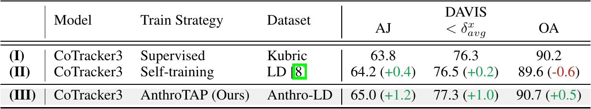
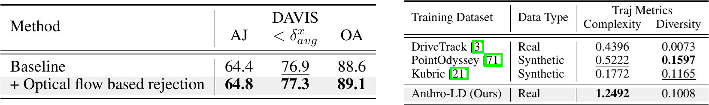

To examine whether training on human points generalize to non-human points,
we grouped query points in the TAP-Vid-DAVIS dataset into human and non-human regions
and compared performance.
Our method shows greater improvement on non-human points.

We compare our pipeline with self-training introduced in Karaev et al..
(I) CoTracker3 model trained on Kubric.
(II) fine-tunes the model on the Let’s Dance (LD) dataset using the self-training introduced in the paper.
(III) trains CoTracker3 model using our pipeline.
Our method shows greater performance boost than self-training introduced in CoTracker3.

We ablate the effect of optical flow-based filtering by comparing it with the baseline
that uses trajectories projected from the human mesh and occlusion prediction via ray casting.
While the baseline already achieves strong performance, applying trajectory rejection yields a further performance boost
We also provide a comparative analysis of prevalent point tracking training datasets, focusing on trajectory complexity and diversity.
We also provide a comparative analysis of prevalent point tracking training datasets, focusing on trajectory complexity and diversity.